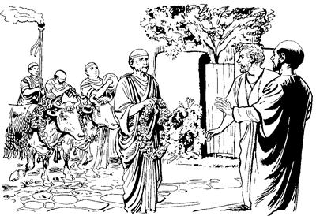

14
1 Paulusap Barnabasap as Ikonium pirekti, Yahudi nimiri Allah yubu lerop aeag wa'irekti, Yesus sembe Allah yubu pere agha tibin nenero wali uro ambarelamsirek. Ambarelamsirekpa, Yahudi nimiap Yunani nimiap nimi maiknori, “Sik uro ambarelamsirang,” aro wanaag seneraglamek. 2 Yahudi nimi nenneri, “Paulusap Barnabasapti yubu orolena ambarelamsirang,” senelamek nimi tanekori, “Yesusag ‘Sikne’ aro seneraglamang nimi ene mali,” aro wana aluktop yubu yangaro Yahudi sisa kom nimi taneko wana tolamsiek. 3 Wana tolamsiek aghana Paulusap Barnabasap ik maiknoro as Ikonium wamdekti, “Nuni Allahri Yesusti uaogne pere agha mog so'oag nimi talulamsil,” aro log kom uro ambarelamsirek. “Sindi yubu ambarelamsirangne nimiri sik sembaukang,” aro nia mangkina Saelbamsilne ponekori sinag mikip nenelamsiogpa, Allah Eldamneri uanepne nimiri uanep komne ulamdekti, “Yaghe, Allahri sin pere agha ual” senenne kekneba ulamdek.4 Kekneba ulamdekpa, as eneko wamek nimi taneko as pogto nenne Yahudi nimiag sip talamekpa, nenne “Yesus sembe sik uro ambarelamsirang,” aro Barnabasap Saulusap sinaga sip talamek. 5 Sin pogtaekti, Yahudi sisa komnangap, Yahudi nangap sin sikini yaboap winiptaekti, “Paulusap Barnabasap oro saelbahiberi, kirikti ya'ag opsukap,” aro ulamek. 6-7 “Sin opsukap,” alamekne eltarekti, Paulusap Barnabasap as enekoag agha lambarekti, Likaonia so'oag pirekti, Likaonia so'o enekoag as Listraap Derbeap pirek. Pirekti, as eneko kanero wamek nimi wamekne yubu walinge Yesus sembe ambarelamsirek.
As Listraap Derbeap Yesus yubu walinge ambatsireka (14:8-20)
8 As Listra aneko nimi kabuni nhon mangaptangto yangkaoghag agha yan malia mangap taogha seka pana babe erarukne nhon wamog. 9 Pukamogha Paulusti Yesus sembe tibin nenero yubu ambarelamsiogne yan mali nimi enekori ka'ebaogpa, Paulusti whing ebom agha til talamdekti, Paulusti, “Nimi eneri ‘Yesusti Nia Mangkina Saelbamsil' aro ambarelamsinne sik sembal. Ane sembe na sae pere agha Yesusti el yan wali nembalul,” sembaog.
10 Paulusti wene sembaogti, nimi enekoag yubu mikip uro lelamogti, “Yan mikip uro sekelabi,” seogpa, nimi eneko lopnagha sekelabiogti, pang yang ulamog. 11 Sekogti, pang yang ulamogha nimi maikno tanekori Paulus sae pere agha nimi taneko wali taogha ibekti, “Nimiri uanep komne uarang,” alamek. Alamekti ibek nimi tanekori Likaonia yubuag haum aro nimi ambarelamsiekti, “Phia phalamsiapne imag wamanga nimi saog tarangdi, so'oag yingkina ulamdang,” alamek.b 12 “So'oag yingkina ulamdang,” alamekti, Barnabas sembe “Nuri phalamap phia,” aro si Zeusc engkaekti, Paulus babe, “Yubu maiknoro ambarelamsildi, yubu tiplamla phia,” aro si Hermesd engkaek.
13 Wene aro engkahiekpa, as Lystra leka kanero solingkirobag paiag sip ina peramag, Zeus pharobag mem ae soroba soropne wamog. Zeus pharobag mem ae wamoghag memne Zeus sembe pairopne ponekori as Likaonia nimiri wene alameka ka'ebaog. Ka'ebaogti, pham sapi yemneog tobogti, uwong-uwonga kal es agha lomoro pham sapi tanekoag kwiria elekahiogti, “Zeusap Hermesap pham sapi oro phalamsukap,” aro nimi maiknoapti as leka solingkirobag ina siram peramag yagto payalamsiek.

As Listra nimiri, “Pham oro phalamsukap,” aro Paulusap Barnabasap sembe pham yagto payalamsiek. (ACT 14.13)
14 Undo unulameka Allah Eldamne Yame Walingeri wepto pogsiognang Barnabasap Paulusapti ka'ebarektie, eltarek. Eltarekti, “Sindi mema phalamangne nene uanep komne ulamang,” aro Barnabasap Paulusapti ag enekto amdekne taepto epsirekti, nimi maikno nusamag lopnagha wa'irek. Nimi nusamag wa'irekti, yubu lelamdekti, 15 “Nangkabo, nene sa'a agha ulamlom? Nu nimi a'un saog uro so'oag nimi wamnam. A'unag yanomonge, ‘ “A'undi teba'en uroba lebe arop komne phalamlomne lipsumundi, wailag nembamundi, Allah ya'ag kamag wamlange im, so'o, mag nia mangkina wamlange sumbaogne ponekoag wanaag seneraglamlulom,” aro yubu walinge ambarel ahanunam,’ aro yanomo. 16 Samen a'unisagyabo wamek ko'oag Nuni Allahri, ‘Nimi niri mem pharoba a'ero ubu pilamlange mem phalamsik,’ aro lipsiog. 17 Lipsiog aghana, mog so'o sukupnange imag agha mag pelengkarelamsildi, so'oag wamlange mauroba li tarelamsildi, a'un kwaneng tenaba tarelamsildi, wana yeng wali nenelamsildi, El wamlange tognop tan koma walia aghabog ulamla,” aro ambatsirek.
18 Wene aro ambatsirek aghana yubu ambatsirekne ingisaplobekti, “Sin phendeag mem phaphaukap,” aro ulamekpa, nen sap sarikto-sarikto “Karong,” alamdek.
19 Wamekpa, as Antiokhia nimiap as Ikonium nimiap Yahudi nimi wamekne as Listra yaekti, as eneko wamek nimi yubu yangaro wana tolamsiekti, limilamsiek. Limilamsiekpa, as enekoag wamek nimi sinag sip talamekti, Paulus kirikti obek. Obekti, “Ya'ag tebal,” aro kiliro asag poa lambaekti, paiag sip toltoghol piek. 20 Toltoghol piek aghana elkabo Yesus yubu ka'ero ulamek nimi taneko longoro kanekto sekamekpa, Paulus pukogti, sekogti, nen as enekoag samoro wa'iog. Wa'iogti, mabogha kwelekaogne elkae Barnabasap nhon Derbe pirek.
Paulusap Barnabasap samoro Antiokhia yareka (14:21-28)
21-23 As Derbe pirekti, Paulusap Barnabasapti nimiag yubu walinge Yesus sembe ambarelamsirekpa, nimi maiknori sik uro seneraglamekti, Yesus yubu ka'ero ulamek nimi as Derbe wamekne maikno talamek. Maikno talamekpa, nen samoro as Listra inagha, as Ikonium phibom agha, Pisidia so'oag as Antiokhia palamdekag agha, Yesusag “Sikne” aro seneragtop nimi winil talamekag wa'alamdek. As a'ero-a'ero winil talamekag wa'alamdekag agha Paulusap Barnabasapti winil talamek nimi anabiag agha sikindoyabo wenehiropnangf weplamsirekti, “Nimi taneko o'olamsululom,” aro sekililamsirek. Sekililamsirekti, kwaneng tero koma molona Yesusag mololamdekti, “Nuro Yesus, nu nimi ni saelbamsilam. Nimi wenehiropnang tanekori anag ‘Sikne’ aro seneraglangkeangba, andi arukna wamukangne, ‘Wali sembamlulam,’ aro ambatto mololangkeap” aro molbarek.
Wenehiropnang weplamsirekne tanekoap Yesus yubu ka'ero ulamek nimiap wenelamsirekti, “Wene Yesusag ‘Sikne’ aro wanaag seneraglamlomne nene wali. Wana phende seneragseng kom,” aro nimi Yesus yubu ka'ero ulamek nimi wenelamsirek. Wenelamsirekti, “Maiknoro seklelameberi, wana nhonog uro wamebe tanena Allah Eldamneri wali uro paia saelbamsilul,” aro ambatsirek. 24 Undo unuarekti, palamdeka Pisidia so'o inagha mog so'o Pamfilia yarek. 25 Pamfilia yarekti, so'o eneko as Perga wamek nimiag Yesus yubu ambatsirekti, as Atalia mag laut longoropne abolag yarekti, 26 kabong nhonag wa'albarek. Wa'albarekpa, kabong pabiropnang tanekori ag kabongag kerekaekpa, “Phoanari ko'oro pabalamlul,” aro kerektop ag towalengkaekti, mag alip toman agha as Antiokhia Siria so'oag yarek. As Antiokhia nimiri, “Allah Wana Waliri piamsileba, Yesus yubu ambarelamsururom,” aro aneko samenag pogsiekpa, alnibarekti, ambatoba tongkahirek. Ambatoba tongkahirekti, Paulusap Barnabasapti, “Nunag ‘Ambarel phururom,’ aro pogsiongne neneko komopto uitnam,” aro nen sap alnibarekag aneko samoro yarek. 27 Yarekti Yesusag “Sikne” aro seneragtop nimi poloro winiptaekpa, ambarelamsirekti, “Allahri yeplamsiori, uabongena Yahudi sisa komnang sembe babe Allahri ina kupsioba, sin babe Yesusag sik uro seneraglamang,” aro ambarelamsirek. 28 Ambarelamsirekti wamdekpa, Yesus yubu ka'ero ulamek nimiap ma'aro wamekti, ik ko'o maiknoro wamek.